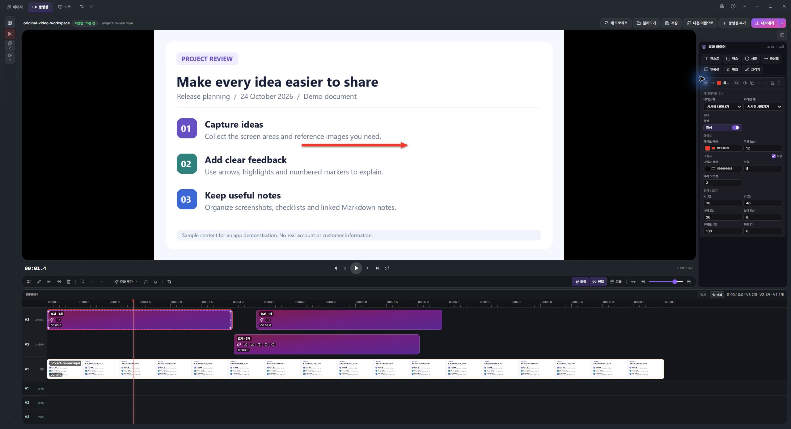

How to trim a Windows screen recording and export MP4 or GIF
Record a task, remove the waiting, add visual instructions and choose an export format for your audience.
Choose a task with a clear beginning and end
A short instruction clip works well when it answers one question: where to find a setting, how to reproduce an issue, or which sequence of controls to use. Prepare a clean sample workspace so the recording contains only material you intend to share.
1. Record a monitor, window or region
Open Record in CLIPARY and choose the capture target. A region recording includes a confirmation stage where you can adjust its bounds before starting. Ctrl+F12 starts or stops recording the default monitor; Ctrl+F11 uses the last recording region. Audio, frame rate and countdown options are available in Settings. Confirm the recording target and audio settings before you begin.

2. Remove the unnecessary beginning and ending
Stop recording to open the video editor under the default workflow. Move the playhead to the point you want to edit. Ctrl+B splits a clip; Q and W trim before or after the playhead in the relevant selected clip. Check your selection before deleting. The timeline also supports linked video and audio editing, so changes can affect both tracks when they are linked.
3. Add instructions where they are needed
Use Add effect for arrows, speech bubbles, emphasis, obscuring effects and numbered markers. Place each effect at the relevant time and adjust its duration. Check the preview to ensure an arrow points at the right control. A voiceover can explain a longer action, but short visual labels often work well for a clip viewed without sound.

4. Choose MP4 or GIF
Use Export for MP4, or the adjacent export menu for GIF. MP4 offers resolution, quality and target-size controls; GIF offers width, frame-rate and looping settings. MP4 is usually a practical choice for video playback, while GIF can suit a short repeating illustration. GIF does not carry an audio track. Smaller dimensions and fewer frames generally reduce file size; review legibility before choosing a smaller output.
5. Check the file you will send
Open the exported file in a separate viewer. Check the start and end, visible labels, obscured areas and audio if applicable. Export is a separate step from saving your editable project: retain the project if you expect to revise the guide later. Avoid recording private notifications or unrelated windows in the first place.
Short visual guide
Real CLIPARY screenshots with English step instructions. This is a visual workflow guide, not a live screen recording.
Try CLIPARY for Windows
Free for Windows 10/11 64-bit. Built-in OCR and ordinary capture, editing, recording and notes run on your PC. Optional external AI has separate account, tool and provider requirements. Support is voluntary.
Free download from Microsoft